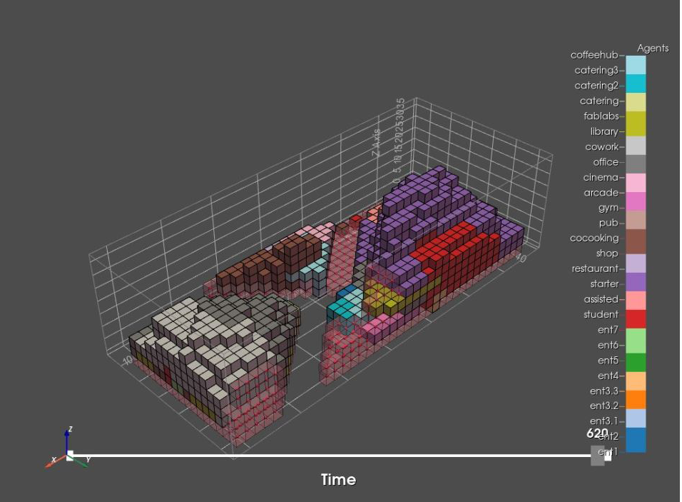
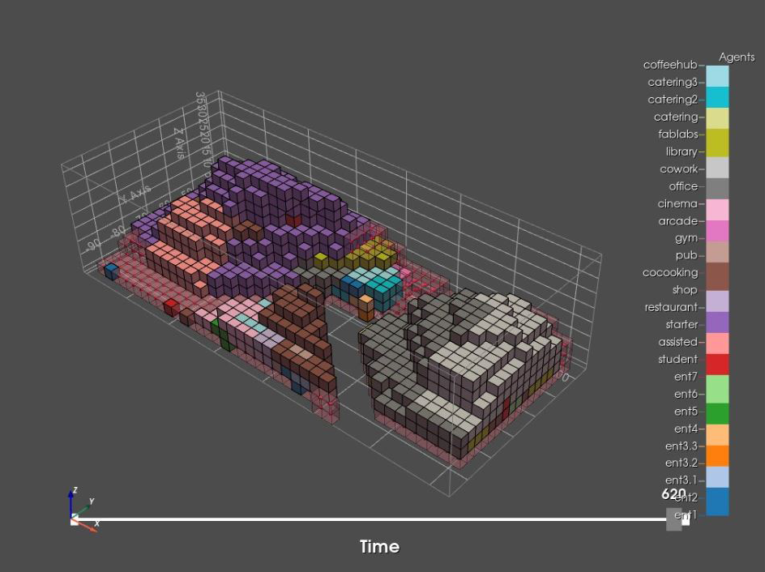

Agent growth
Explanation
After the agents are positioned on their prefered spot in the seed allocation. They can now grow to fill the envelope. This will give an justifiable placement and shape of each function within the envelope. Each function will occupy another voxel that has the best value based on the data of the envelope, the criteria of the function and its relation with other functions. Each function has a preference to grow horizontally or in all directions to get better spatial qualities of certain spaces. The growing process will go on for each function until it has reached its maximum area.
Envelope


Pseudo code
1. Create stencil z & setncil xy
2. While the frame count is below the maximumk of 620
NOISE
2.1 - Check silent level & noise repel
DYNAMIC RELATIONS
2.2 - For every agent
2.2.1 - Find location
2.2.2 - Find distance from the voxel to every other
voxel
2.2.3 - Create a distance lattice in agn_acc_list
2.3 Combine distance lattice & agn_acc_list
2.4 - For every agent
2.4.1 - Find current location
2.4.2 - For every location
STENCILS/HORIZONTAL GROWTH
- Check neighs in z plane & neighs in xy plane
- Compare preference to grow in certain plane
and give them a value. XY = 1, Z = variable
- If neigbour is available add it to list of
free neighbours
2.4.3 - As long as there are free neighbours
- Evaluate every neighbour
- Compare agent preference with enviroment
info
SQUARENESS (Credit to Maren)
- Double neighbours get a higher value
VOXEL COUNT
- If the current voxel count is lower than
the maximum
- Add selected neighbour to list of agent
locations & set neighbour as unavailable
- Else stop
Seed allocation and Agent growth full notebook
Unfortunately due to limited time we have not been able to debug our current agent based model. When done with the old envelope there were no problems but with the new one some problems occur. What happends in the current model is that some parts of the new envelope are not able to be occupied during the growth process. This leaves some voxels that are occupied during the seed allocation isolated and that function then grows into places is doesn’t want to which makes no sense. This does not correspond to our data and our concept. Besides the debugging there are other improvements that could be made.
1. Add a max depth criteria for each function, creating daylight access for each housing unit for example. Another idea could be to add skylights or courtyards per x amount of voxels for some functions.
2. Add floor preference and closeness to façade (outer & inner)
3. Have agents negotiate with each other.